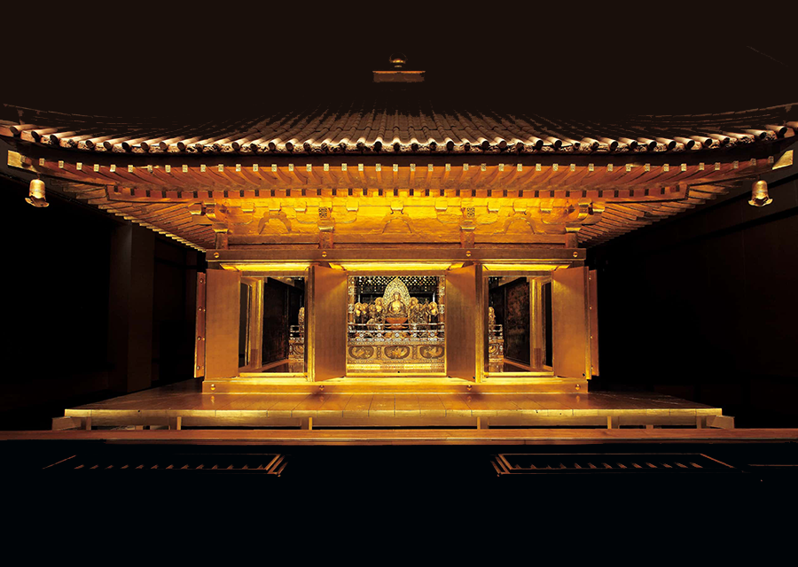

中尊寺金色堂
中尊寺は嘉祥3年（850）、比叡山延暦寺の高僧慈覚大師円仁（じかくだいしえんにん）によって開かれました。
金色堂は中尊寺創建当初の姿を今に伝える建造物で1124年（天治元年）、奥州藤原氏初代清衡公によって上棟されました。数ある中尊寺の堂塔の中でもとりわけ意匠が凝らされ、極楽浄土の有様を具体的に表現しようとした清衡公の切実な願いによって、往時の工芸技術が集約された御堂です。
平泉はおよそ100年近くにわたって繁栄し、みちのくは戦争のない「平泉の世紀」でした。しかし、平氏政権を倒した源義経が、兄頼朝と対立し平泉に落ちのびて間もなく、義経を保護した秀衡公が病死すると、四代泰衡公は頼朝の圧力に耐えかね義経を自害に追い込みます。その泰衡公も頼朝に攻められ、文治5年（1189）奥州藤原氏は滅亡したのです。